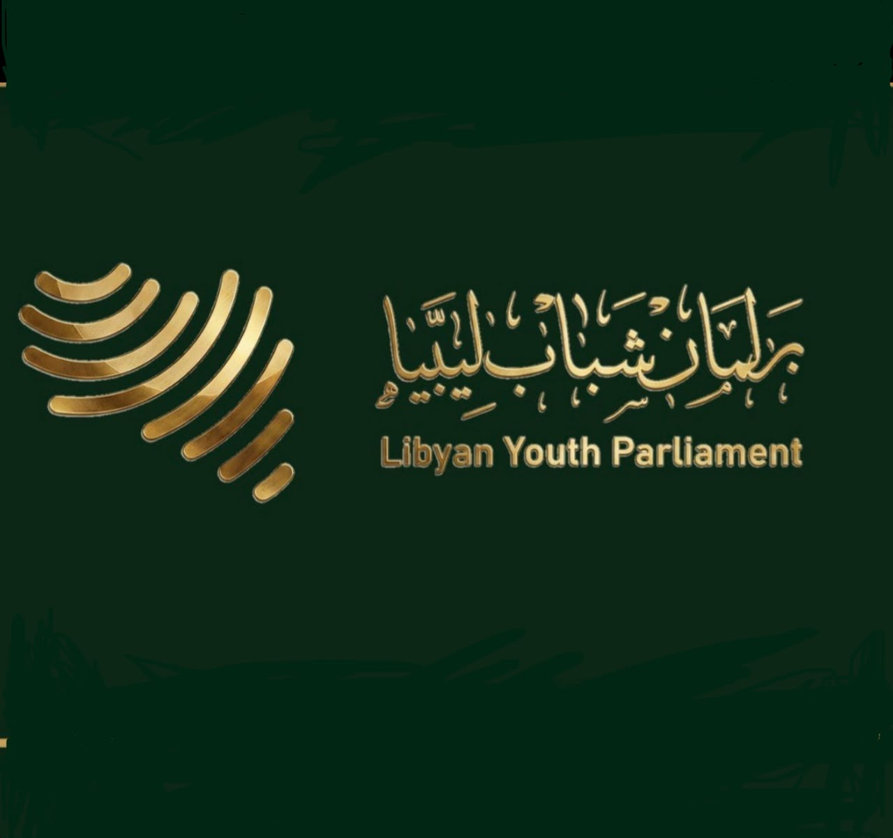

⌁
تعزيز الحوار
خلق مساحة آمنة ومنظمة للحوار بين الشباب والفاعلين في المؤسسة العسكرية.

لجنة العلاقاتملتقى قوى الشبابية شارك في الحوارلجنة العلاقات والتواصل
مساحة وطنية تجمع الطاقات الشبابية والقيادات المجتمعية لتعزيز جسور الثقة، وفتح مسارات الحوار، ودعم مؤسسة عسكرية موحدة تحت راية الوطن.
ينطلق الملتقى من إيمان راسخ بأن وحدة المؤسسة العسكرية هي ركيزة للاستقرار والسيادة، وأن صوت الشباب وحضوره الواعي جزء أصيل من صياغة مستقبل ليبيا.
المزيد عن الملتقى ←نعمل على تحويل الحوار إلى مسارات تعاون مسؤولة، تستند إلى الثقة والمصلحة الوطنية.
خلق مساحة آمنة ومنظمة للحوار بين الشباب والفاعلين في المؤسسة العسكرية.
تقريب وجهات النظر وترسيخ الثقة المتبادلة على أساس الانتماء للوطن.
بلورة توصيات شبابية عملية تدعم مسار توحيد المؤسسة العسكرية.
تمكين الشباب من المشاركة المسؤولة في قضايا الأمن والاستقرار الوطني.
تتولى اللجنة إدارة شبكة العلاقات والتواصل مع الشركاء والضيوف والجهات المشاركة، بما يضمن تمثيلاً متوازناً وتجربة منظمة لكل الحاضرين.
تواصل مع اللجنة ←التنسيق مع الجهات الرسمية والعسكرية والشبابية المشاركة.
إعداد قوائم الضيوف ومتابعة الدعوات وتأكيدات الحضور.
بناء تعاون مهني لنقل رسالة الملتقى ومخرجاته بمسؤولية.
توفير نقطة اتصال مباشرة قبل الملتقى وخلاله وبعده.
تصور أولي للمحطات الرئيسية، ويُنشر البرنامج التفصيلي بعد اعتماد موعد الملتقى.
ترحيب بالمشاركين وعرض أهداف اللقاء ومنهجية العمل.
حوار مباشر حول دور المبادرات الشبابية في دعم الاستقرار.
مجموعات عمل لصياغة التحديات والفرص والتوصيات العملية.
عرض الخلاصات واعتماد آلية المتابعة والتواصل.
سجل موحّد لإدارة التواصل مع الجهات المشاركة في ملتقى برلمان شباب ليبيا.
| الجهة | التصنيف | المكلّف | المتابعة | الحالة | إجراءات |
|---|
للمشاركة، أو طلب شراكة، أو التواصل الإعلامي، أرسل بياناتك وستتواصل معك لجنة العلاقات.